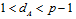
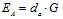
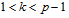
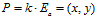
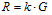
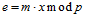
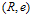
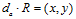
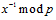
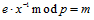

С использованием вычислений на эллиптических кривых несложно реализовать аналог криптосистемы Эль-Гамаля.
Он состоит из следующих шагов:
1. Отправитель выбирает параметры эллиптической кривой, а именно модуль p, коэффициенты a, b и образующую точку G.
2. Отправитель выбирает секретный ключ  и вычисляет свой открытый ключ − точку на кривой , который делается доступным всем пользователям.
3. Абонент B выбирает случайное число и вычисляет , и .
4. Абонент B выполняет шифрование , и посылает шифртекст абоненту A.
5. Абонент A вычисляет и находит с использованием расширенного алгоритма Евклида.
6. Абонент A выполняет расшифрование .
Существует также аналог криптосистемы RSA на эллиптических кривых, но он не дает существенных преимуществ, так как требует использования модуля такой же длины как и базовый алгоритм RSA.